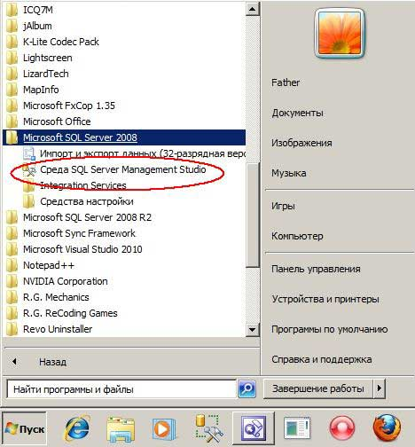
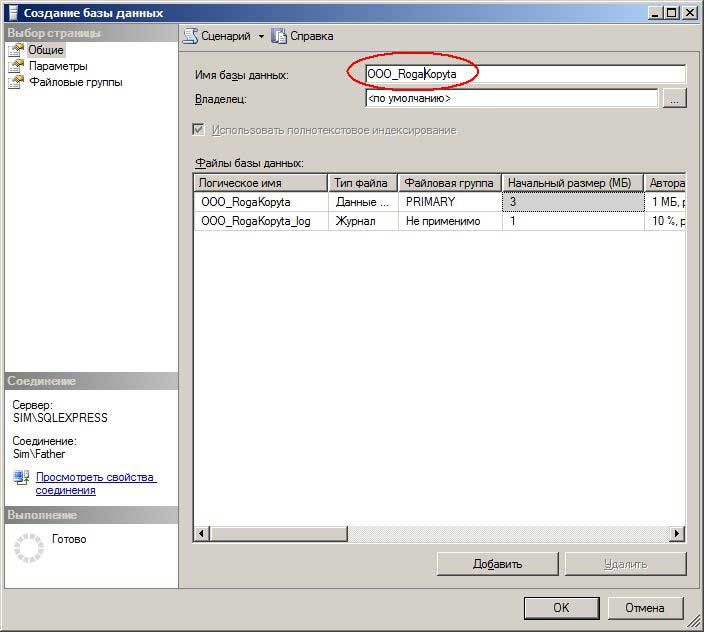
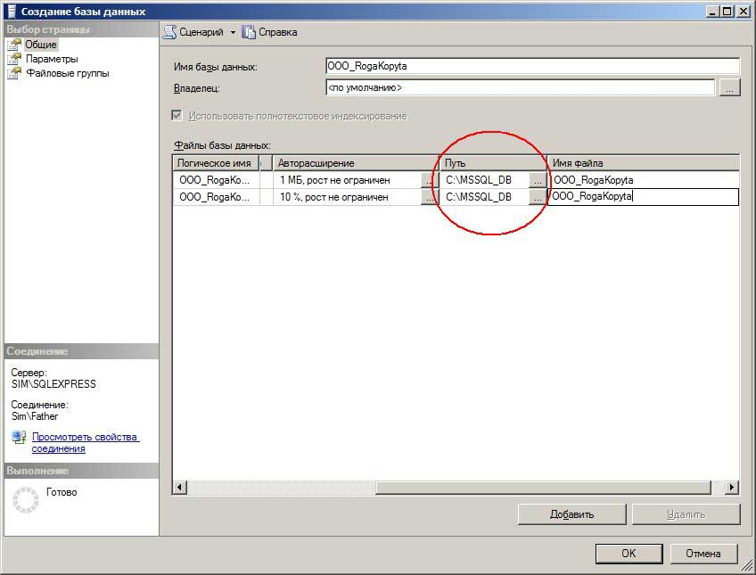
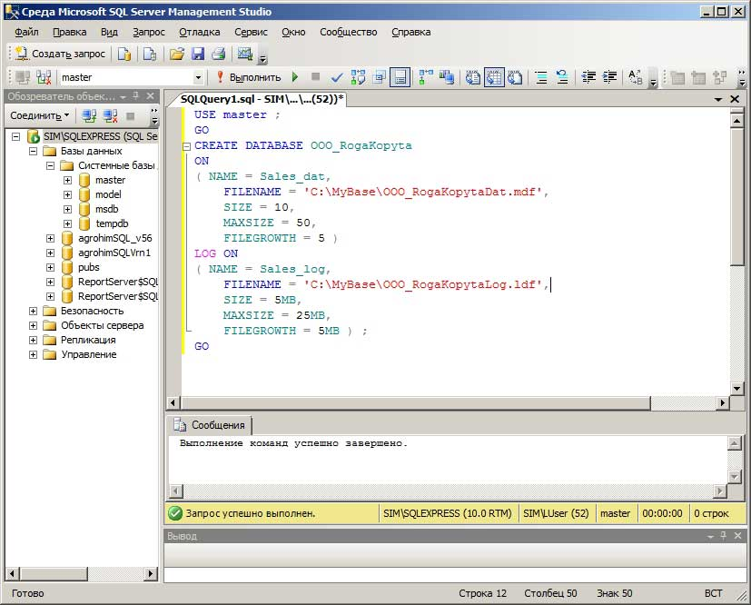

Для создания базы данных в MS SQL Server Express Edition (облегченная бесплатная версия MS SQL Server) проще всего воспользоваться средством управления SQL Server Management Studio (SSMS). Условно говоря, SSMS - это графический интерфейс пользователя (оболочка, среда) для управления объектами MS SQL Server (естественно, должна быть предварительно установлена у вас на компьютере) плюс скриптовый редактор для составления запросов.
Прим. Если вы работаете с MS SQL, то знание оболочки SSMS является абсолютно необходимым навыком ( хотя бы в минимальном объеме). Правда, существуют и альтернативные программы от стороннего производителя для управления MS SQL Server, например Toad for MS SQL Server
Итак, чтобы создать новую базу идём Пуск>Программы>MS SQL Server>Среда SQL Server Management Studio:

Для создания новой базы 'с нуля' в Server Management Studio становимся на ветку Базы данных, щёлкаем правой кнопкой и выбираем в контекстном меню Создать базу данных:
Прим. В версиях MS SQL Server 2012 и 2014 в смысле интерфейса мало что изменилось по сравнению с 2008 -й.
Появляется форма, в которой нужно указать имя вашей новой базы данных - пусть в нашем примере это будет учебная БД OOO_RogaKopyta:

В столбце Путь можно указать локализацию базы данных, если хотите, чтобы она отличалась от принятой по умолчанию:
Прим. Как определить путь к базе данных можно посмотреть здесь

Жмём кнопку OK и видим в списке баз данных нашу вновь только что созданную базу:

Что характерно. Создать новую базу данных в MS SQL Server можно и программным путём, используя конструкцию Create DataBase на языке T-SQL, что-то вроде этого:

Выполняем созданный запрос, и приходим к результату аналогичному тому, что мы достигли 'ручным' путём.
Всё, база данных создана. Правда, пока она пустая.